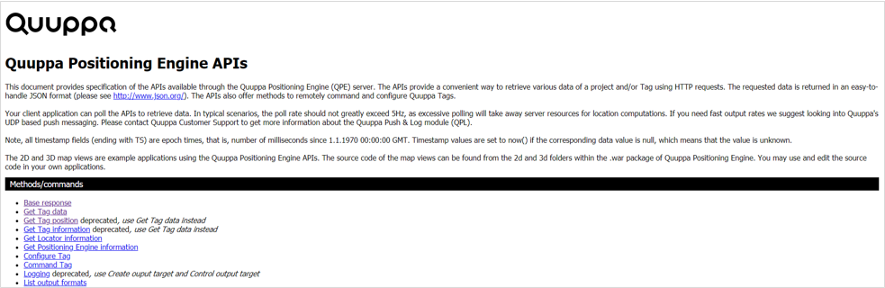
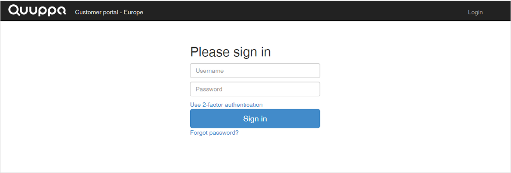
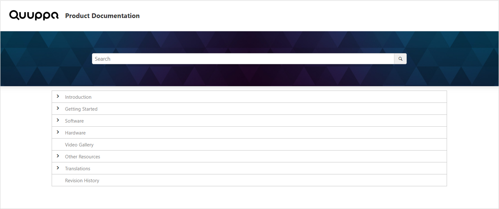

API Documentation and Links
The API documentation and links section of the Positioning Engine Web Console's status pane directs you towards other useful resources that could come in handy as you set up your system and start running your QPE. This section will walk you through the different links that are available.
API Documentation
Our API Documentation will provide you with more detailed information of the Quuppa APIs and how you can use them in your own applications. You can use them to build your own dashboard, like the Positioning Engine Web Console, or to show specific data of interest to your users on a map view etc.

Java Virtual Machine Startup Parameters for QPE
The Java Virtual Machine startup parameters for QPE link will take you to a page where we have collected the startup parameters that you will need to use the QPE. This is a useful resource to refer to as you set up you QPE as well as if you are troubleshooting any issues with your QPE and want to check your configurations are correct.

You can also find a copy of the table of startup parameters here, if for instance you do not yet have access to the QPE Web Console.
Quuppa Customer Portal
The Quuppa Customer Portal link will take you directly to the Quuppa Customer Portal, where you can manage the licenses, project keys and access rights for your project as needed.

Quuppa Product Documentation
The Online Product Documentation link will take you to our product documentation site, where you will find more detailed information about how to use the Quuppa software suite (e.g. Quuppa Site Planner, Quuppa System Simulator and Quuppa Data Player) as well as our hardware products (e.g. Locators and tags).

Email to Quuppa Technical Support
The Email to Quuppa technical support link opens your email client to a message addressed to support@quuppa.com in case you need to contact our Quuppa Support Team at any time while using the QPE. Our support team will get back to you regarding your question as soon as possible.
HOW-TO Securing your Server Web Console with a username/password
The link HOW-TO Securing your Server Web Console with a username/password opens up a short instruction on how to password protect your Tomcat server.
HOW-TO Enabling Compression on Tomcat to Reduce Network Usage
The link HOW-TO Enabling Compression on Tomcat to Reduce Network Usage opens up a short instruction on how to enable compression for a Tomcat 8 server.